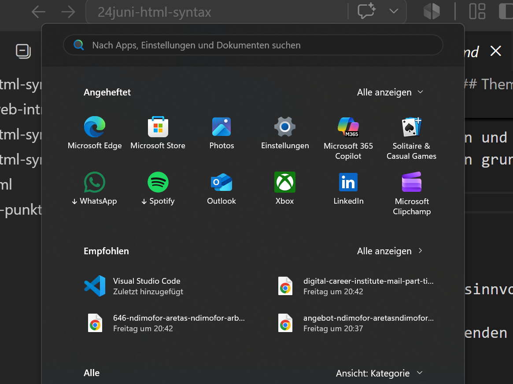

This is mein Website.
The Impact of Technology on Modern Life Technology has become one of the most influential forces shaping human life in the modern era. From the way we communicate to how we work, learn, and entertain ourselves, almost every aspect of daily life has been transformed by technological advancement. While these changes have brought significant benefits, they have also created new challenges that society is still trying to manage. One of the most noticeable impacts of technology is in communication. In the past, people relied on letters or face-to-face meetings to stay in touch, which could take days or even weeks. Today, with smartphones, social media platforms, and instant messaging apps, communication has become almost immediate.
In addition to communication, technology has significantly changed education. Online learning platforms, digital classrooms, and educational apps have made learning more accessible than ever before. Students can now attend courses from universities around the world without leaving their homes. Additionally, access to information has become easier through search engines and online libraries. This democratization of knowledge has helped many people improve their skills and career opportunities.

People can connect with others across the world in seconds. This has made it easier to maintain relationships, collaborate on international projects, and share information quickly. However, this convenience also has a downside. Many people now rely heavily on digital communication and may experience weaker face-to-face social skills or feelings of isolation despite being constantly “connected.” Education is another area that has been deeply affected by technology. Online learning platforms, digital classrooms, and educational apps have made learning more accessible than ever before. Students can now attend courses from universities around the world without leaving their homes. Additionally, access to information has become easier through search engines and online libraries. This democratization of knowledge has helped many people improve their skills and career opportunities. On the other hand, the abundance of information can sometimes be overwhelming, and not all online sources are reliable. Students must now also develop critical thinking skills to evaluate what they read online. The workplace has also been transformed by technological progress. Automation, artificial intelligence, and advanced software systems have increased productivity and efficiency in many industries.
Technology has also transformed entertainment and lifestyle. Streaming platforms, video games, and social media have created new forms of entertainment that are easily accessible at any time.